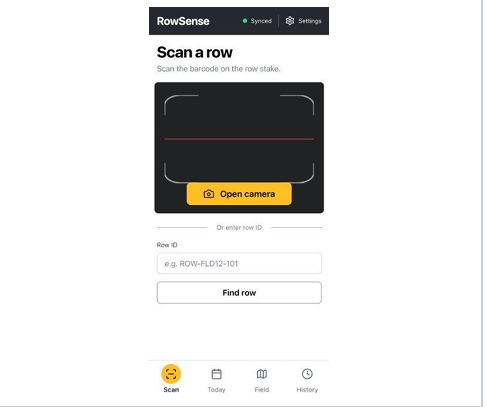

Field Harvest Data Collection Application
A mobile-friendly web app that helps Bayer field operators record, review, and plan around corn moisture measurements, even without cell service.

Description
Corn moisture is one of the main signals for when a crop is ready to harvest. At Bayer, field operators walk rows repeatedly to take moisture readings, then record them and work out which rows still need more sampling. Organizing those readings and deciding where to sample next is slow and error-prone, and fields often have little or no cell reception.
Our goal is to make that process simple and consistent. The application lets data collectors enter readings for each row, review past measurements, and see which parts of a field still need data. It flags readings that look like outliers, compares each row against expected moisture ranges for the season, and recommends when a row should be sampled again. Researchers can open the same app on a computer to view charts and trends, and supervisors can manage fields and assignments.
We chose to build a web application rather than a native app, so there is nothing to install and everyone always has the latest version. To handle poor reception, readings are stored on the device and synced to a central database once a connection returns. This project is still in progress. So far we have gathered requirements with our client, built a prototype (RowSense), and defined the system's user roles.
My role
I am the Component Design Lead on a six-person team (with Jonah Samuels, Carter Voelkel, Megan Chng, Cael Shroff, and Owen Gilbertson). I help drive the UI/UX and, as a full-stack developer, expect to focus mostly on the frontend. I also designed and built our team website.
My work so far includes researching frameworks and existing solutions to similar problems, and defining the three user roles (Collector, Researcher, and Supervisor) along with what each can view, upload, edit, and delete. I am now researching how the app can work fully offline, including caching the app on a phone and syncing stored readings back to the server.
Skills and knowledge gained
- Technical skill: Role-based access control and server-side permission design
- Technical skill: Offline-first web app design (caching, on-device storage, data sync)
- Technical skill: Requirements gathering and UI/UX prototyping for mobile use in the field
- Soft skill: Working with an industry client and translating vague needs into requirements
- Soft skill: Collaborating on a multi-role team with shared documentation and weekly reporting
Supporting documents
- Team website
- 491 report
- 492 report (coming Spring 2027)
Big picture contribution
Bayer's researchers and field teams need trustworthy moisture data to decide when to harvest. My part shapes how people actually use the system: the interface collectors rely on in the field, and the access rules that keep the client's data safe. Collectors can only reach their assigned field and delete their own readings, researchers have read-only access, and only supervisors can change fields, users, and roles.
Because every screen, database query, and sync rule depends on those roles, defining them early gives the whole team a foundation to build on. My offline research aims to make sure collectors never lose a reading when the signal drops, which is where the app matters most.